'17
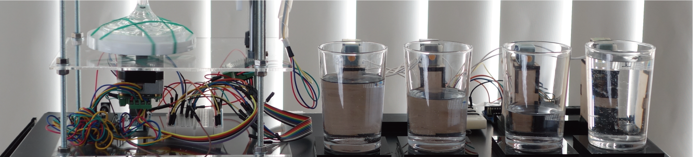personal
身体情報を外在化させ、自分自身を客観的にみるための作品。個人の情報を入力していくと、目の前の装置が徐々に動き出し、唯一無二の音を奏で始める。データの中の個人が膨れ上がっていく現代において、自己の所在を問う作品となった。
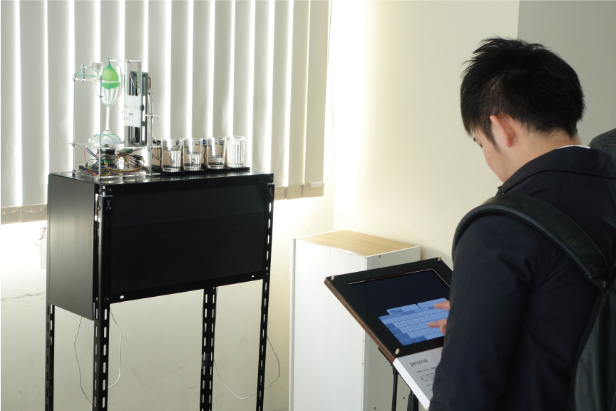 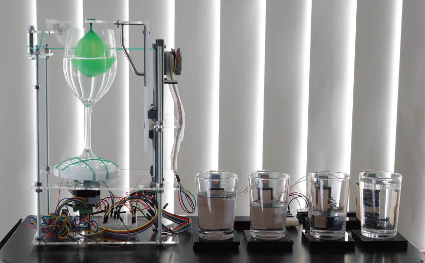 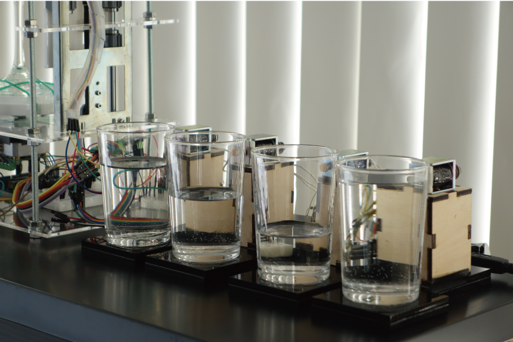 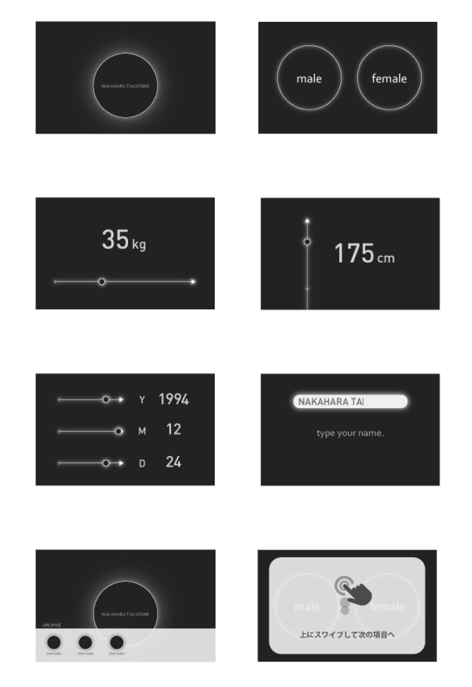 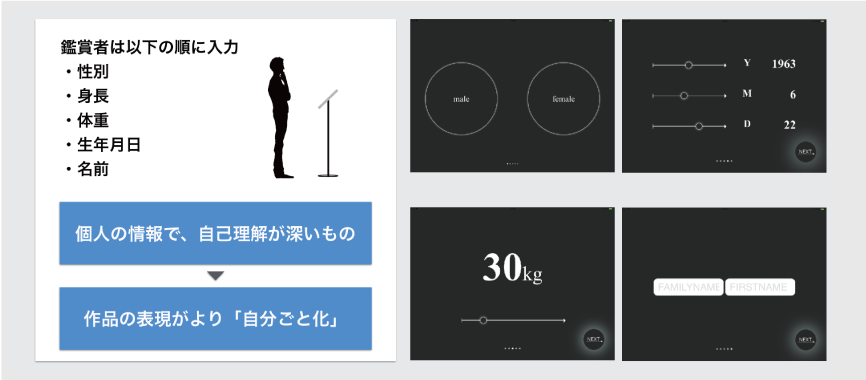 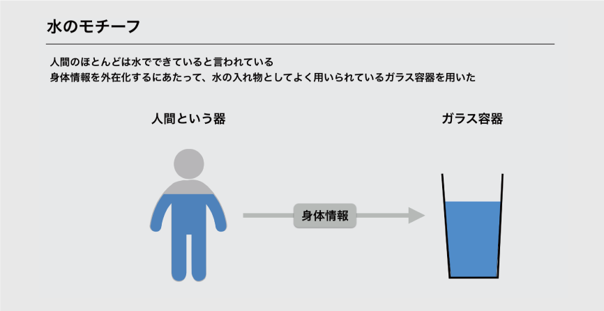インターカレッジ・ソニック・アーツフェスティバル2017にて展示を行った。
MedeiArt
1ヶ月
チーム作業:2人 / 担当箇所：構想/サウンド/デザイン/サーバーサイド

身体情報を外在化させ、自分自身を客観的にみるための作品。個人の情報を入力していくと、目の前の装置が徐々に動き出し、唯一無二の音を奏で始める。データの中の個人が膨れ上がっていく現代において、自己の所在を問う作品となった。
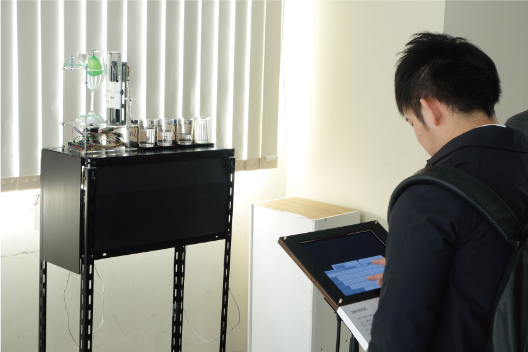 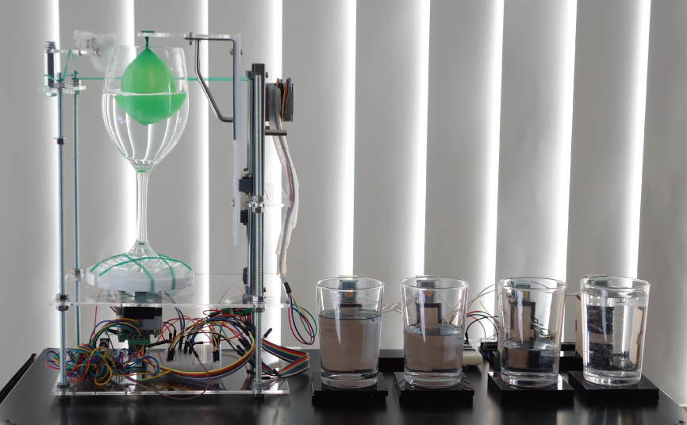 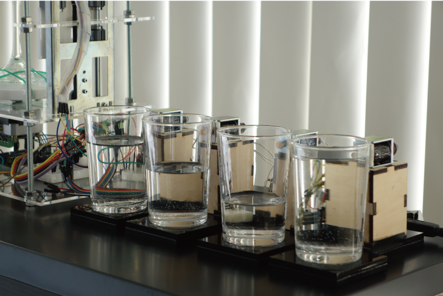 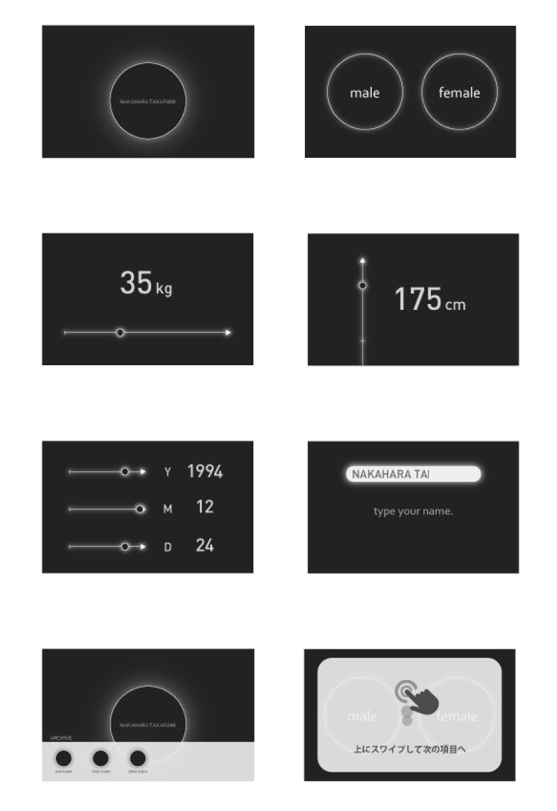 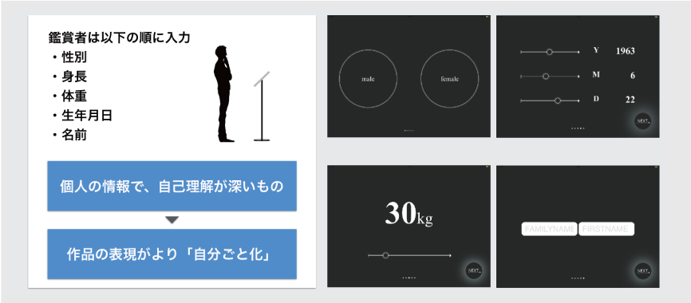 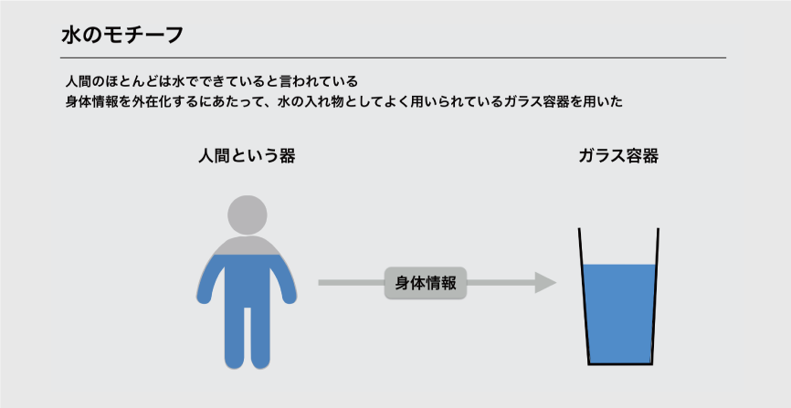インターカレッジ・ソニック・アーツフェスティバル2017にて展示を行った。
MedeiArt
1ヶ月
チーム作業:2人 / 担当箇所：構想/サウンド/デザイン/サーバーサイド